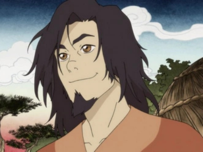
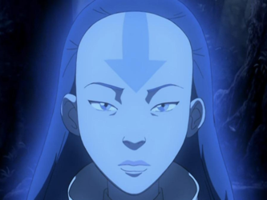
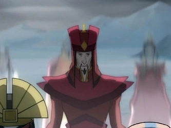
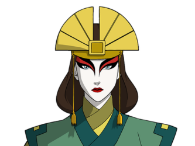
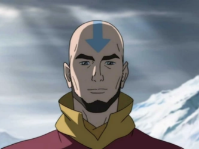

O Avatar
O Avatar é a personificação humana da luz e da paz, resultado da união entre o Espírito Avatar e um corpo mortal. É o único ser capaz de dominar as quatro artes de dobra e tem como missão manter o equilíbrio entre as nações do mundo e entre o plano físico e o espiritual. Mais do que um simples dominador, o Avatar representa a harmonia entre forças opostas: humanidade e espiritualidade, poder e sabedoria, ação e serenidade. Sua conexão com o Espírito Avatar lhe concede força e responsabilidade únicas, tornando-o o guardião da paz e da estabilidade mundial.
Após a morte, o Espírito Avatar renasce em um novo corpo, seguindo o ciclo das nações na ordem: fogo, ar, água e terra. Esse ciclo de reencarnação só pode ser interrompido se o Avatar for morto enquanto estiver no Estado Avatar — momento em que sua conexão espiritual é mais intensa. Nessa situação, o Espírito Avatar será destruído, encerrando o ciclo e rompendo o elo entre os mundos.
Estado Avatar
O Estado Avatar é a habilidade mais poderosa que um Avatar pode alcançar. Ele permite canalizar as vastas energias cósmicas e o conhecimento acumulado de todas as suas vidas passadas, concedendo uma força imensamente ampliada e a capacidade de realizar feitos extraordinários de dominação sobre os quatro elementos. Esse estado simboliza a completa união entre o corpo físico e o Espírito Avatar. Em momentos de perigo extremo ou intensa angústia emocional, o Avatar pode entrar nesse estado de forma inconsciente, como um mecanismo de defesa natural. Nesses casos, o poder liberado é devastador, mas o Avatar perde o controle consciente de suas ações, o que pode causar grandes danos colaterais. Quando o Estado Avatar é totalmente dominado, o Avatar conquista o controle pleno dessa energia, podendo ativá-lo e encerrá-lo à vontade. Contudo, o risco permanece: se o Avatar for morto enquanto estiver nesse estado, o ciclo de reencarnação é destruído, encerrando para sempre a ligação entre o mundo físico e o espiritual. Assim, o Estado Avatar representa tanto o auge do poder quanto a maior responsabilidade do portador desse dom.
ORIGEM
A origem do Avatar remonta a um tempo antigo, quando o mundo dos humanos e o dos espíritos ainda eram um só. Nessa era, os espíritos caminhavam entre as pessoas, e o equilíbrio entre luz e escuridão era mantido por duas entidades opostas: Raava, o espírito da luz e da paz, e Vaatu, o espírito do caos e da escuridão.
Durante um período conhecido como a Era dos Leões-Tartaruga, cada uma dessas criaturas gigantes oferecia abrigo e proteção aos humanos, concedendo-lhes o poder temporário de dobrar um elemento sempre que saíam de suas cidades para sobreviver no mundo selvagem. Um jovem chamado Wan, curioso e corajoso, foi o primeiro humano a desafiar essa ordem. Ele recebeu o poder do fogo de uma Leão-Tartaruga, mas se recusou a devolvê-lo, acreditando que poderia usá-lo para proteger os outros.Desde então, o Avatar renasce em um ciclo contínuo entre as quatro nações, carregando consigo o dever de proteger o equilíbrio do mundo e preservar a harmonia entre a humanidade e os espíritos.
Em sua jornada, Wan acabou libertando acidentalmente Vaatu de seu confronto com Raava, desencadeando um desequilíbrio que ameaçaria o mundo inteiro. Arrependido, ele se uniu a Raava e viajou pelas terras das outras Leões-Tartaruga, dominando os quatro elementos sob sua orientação. No momento em que Raava e Wan se fundiram permanentemente durante a batalha final contra Vaatu, nasceu o primeiro Avatar — a união eterna entre espírito e humano, destinada a manter o equilíbrio entre os dois mundos.
Desde então, o Avatar renasce em um ciclo contínuo entre as quatro nações, carregando consigo o dever de proteger o equilíbrio do mundo e preservar a harmonia entre a humanidade e os espíritos.
Principais Avatares Conhecidos
Avatar Wan
Wan nasceu em uma das primeiras cidades humanas, construída sobre o dorso de um Leão Tartaruga. Foi o primeiro Avatar, vivendo em uma era em que os humanos temiam os espíritos. Determinado e curioso, passou anos aprendendo a sobreviver entre eles, até encontrar Raava, o espírito da luz. Juntos, enfrentaram Vaatu, o espírito do caos, e impediram que ele destruísse o equilíbrio do mundo. Durante essa luta, Wan e Raava se fundiram, dando origem ao ciclo Avatar. Embora não tivesse uma equipe tradicional, Wan contou com Raava como parceira espiritual e com o apoio de alguns espíritos aliados. Ele morreu tentando restaurar a paz entre humanos e espíritos, deixando como últimas palavras um pedido de perdão por não ter conseguido trazer harmonia completa ao mundo.
Avatar Yangchen
Yangchen nasceu nos Templos do Ar do Oeste e foi uma nômade do ar amplamente reverenciada, considerada uma das Avatares mais sábias e compassivas da história. Viveu em uma época marcada por intensos conflitos políticos e espirituais, e, ao contrário de muitos monges de sua época, acreditava que o dever do Avatar era garantir uma paz duradoura, mesmo que isso exigisse grandes sacrifícios pessoais. Sua sabedoria e empatia proporcionaram séculos de prosperidade e estabilidade ao mundo, tornando-a um símbolo de bondade e compaixão no ciclo Avatar. Embora contasse com conselheiros espirituais e diplomatas das quatro nações, Yangchen costumava agir sozinha, guiada por seu profundo senso de equilíbrio. Faleceu pacificamente já em idade avançada, após consolidar a união entre as nações.
Avatar Kuruk

Kuruk nasceu na Tribo da Água do Norte, em uma época de paz e prosperidade. Foi um guerreiro habilidoso e um Avatar mais voltado à ação do que à espiritualidade. No entanto, durante sua vida, o equilíbrio entre o mundo físico e o espiritual começou a se deteriorar. Kuruk enfrentou diversos espíritos corrompidos, mas sofreu profundamente ao perder sua amada, Ummi, para o espírito Koh, o Roubador de Rostos. Contava com o apoio de caçadores, guerreiros e sábios espirituais de sua tribo, mas carregava sozinho o fardo de proteger o mundo das trevas. Morreu jovem, aos 33 anos, consumido por doenças espirituais — um fim trágico que simbolizou a culpa e o sacrifício inerentes ao papel do Avatar.
Avatar Szeto
Szeto nasceu na Nação do Fogo e viveu após Kuruk, em um período de crise política e corrupção. Era um homem simples antes de descobrir sua verdadeira identidade como Avatar. Em vez de buscar glória por meio de batalhas, concentrou seus esforços em restaurar a economia e o governo de sua nação, trazendo de volta a confiança e o equilíbrio. É lembrado por sua sabedoria administrativa e por usar o poder do Avatar não para guerrear, mas para reformar. Cercou-se de conselheiros, generais e estudiosos, dedicando-se a governar com justiça. Morreu em paz, deixando um legado de estabilidade e harmonia.
Avatar Kyoshi
Kyoshi nasceu no Reino da Terra, em uma aldeia pobre e marcada pela injustiça social. Teve uma infância difícil e, após a morte de seu mentor, assumiu seu papel como Avatar com uma força e determinação inabaláveis. Fundou a Ilha Kyoshi e criou os Guerreiros Kyoshi, um grupo de guerreiras que perpetuou seu legado. Também estabeleceu o Dai Li, uma força policial originalmente voltada à proteção do Reino da Terra, mas que mais tarde seria corrompida. Teve ao seu lado aliados leais, como Rangi — sua guarda pessoal e parceira amorosa — e Kelsang, um monge do ar que acreditava em seu potencial. Kyoshi viveu até os 230 anos, morrendo de causas naturais e tornando-se o Avatar com a vida mais longa já registrada.
Avatar Roku

Roku, também da Nação do Fogo, nasceu em uma era de prosperidade e foi amigo de infância do futuro Senhor do Fogo, Sozin. Durante sua jornada como Avatar, treinou com os melhores mestres das quatro nações, tornando-se um homem sábio e equilibrado. No entanto, quando Sozin iniciou planos para expandir o domínio da Nação do Fogo, Roku tentou impedi-lo, mas acabou sendo traído. Sua morte, causada por uma erupção vulcânica enquanto Sozin se recusava a ajudá-lo, marcou o início da guerra dos cem anos e selou o destino do mundo. Teve como fiel companheiro Fang, seu dragão, além de inúmeros mestres que o acompanharam em suas viagens.
Avatar Aang
Aang, um jovem nômade do ar, foi descoberto como Avatar ainda criança. Assustado com o peso dessa responsabilidade, fugiu e acabou preso em um iceberg por cem anos. Ao despertar, encontrou o mundo dominado pela Nação do Fogo. Determinado a restaurar o equilíbrio, aprendeu os quatro elementos e derrotou o Senhor do Fogo Ozai, encerrando a guerra sem tirar uma vida — removendo sua dobra de fogo por meio da energia dobragem. Contou com a ajuda e amizade de Katara, Sokka, Toph e Zuko, formando uma das equipes Avatar mais marcantes da história. Aang faleceu aos 66 anos, seu corpo debilitado pelos efeitos de ter ficado congelado por um século, e reencarnou depois em Korra.
Avatar Korra

Korra nasceu na Tribo da Água do Sul e, ainda criança, já demonstrava dominar três elementos com facilidade. Cresceu sob intenso treinamento, mas enfrentou dificuldades em compreender o mundo espiritual e suas próprias emoções. Mesmo assim, enfrentou grandes inimigos — Amon, Unalaq, Zaheer e Kuvira — e conseguiu recriar o Portal Espiritual, reconectando o mundo físico ao espiritual. Teve o apoio constante de Mako, Bolin, Asami e Tenzin, além da orientação do espírito Raava. Viva até hoje, Korra tornou-se um símbolo de renovação, coragem e aceitação, encerrando o longo ciclo de guerras e desequilíbrios que assombrava o mundo desde os primeiros Avatares.